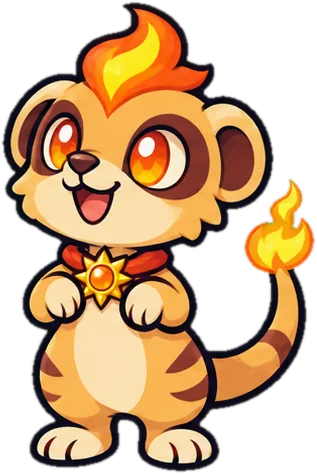

 Fire
Fire Electric
ElectricTap a stage to read its story.
Lynxkit is a round-faced lynx cub with tawny golden fur patterned in dark brown rosettes, pointed ear-tufts, and eyes too large for its head. It sits on the warm sand of Sand Dunes like a very confident pebble, watching everything with alert wide eyes. Its tail flicks in sharp arcs when interested, and it has a habit of batting at heat-shimmer the way other creatures bat at shadows. Guardians say Lynxkit once chased a mirage for three hours, not because it was fooled, but because it found the chase amusing.
Field note: Lynxkit can tell the temperature of sand by touching it with one paw-pad - it never lies down on sand that will burn.
Sand Dunes. Lynxkit and its family are found in the Sand Dunes. See everyone who lives there.
Share a Bond Food that matches its types to become friends. Lynxkit loves:
A Bond Food is not a trick. It joins your spirit with the Kimuro's spirit, and only when it chooses you.
Print the Kimuro adventure packs: mazes, cards, a board game and Bond Mark medals.
See the printable packs